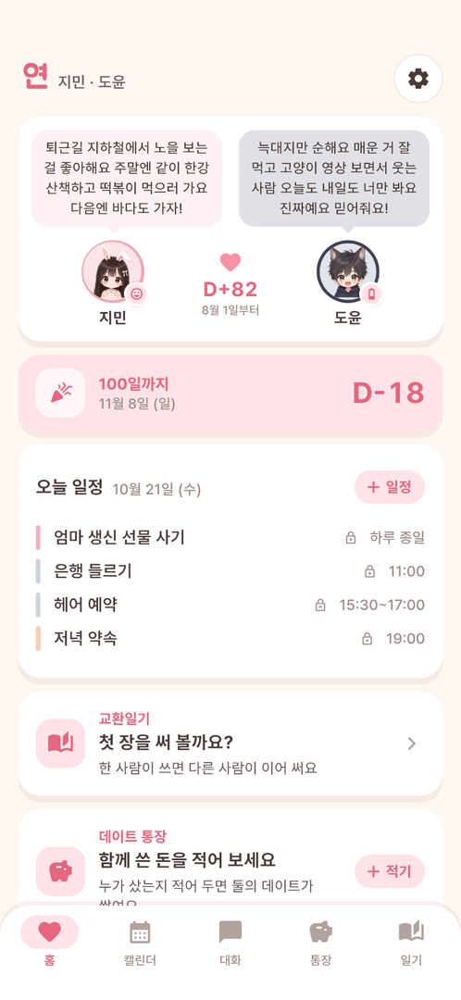
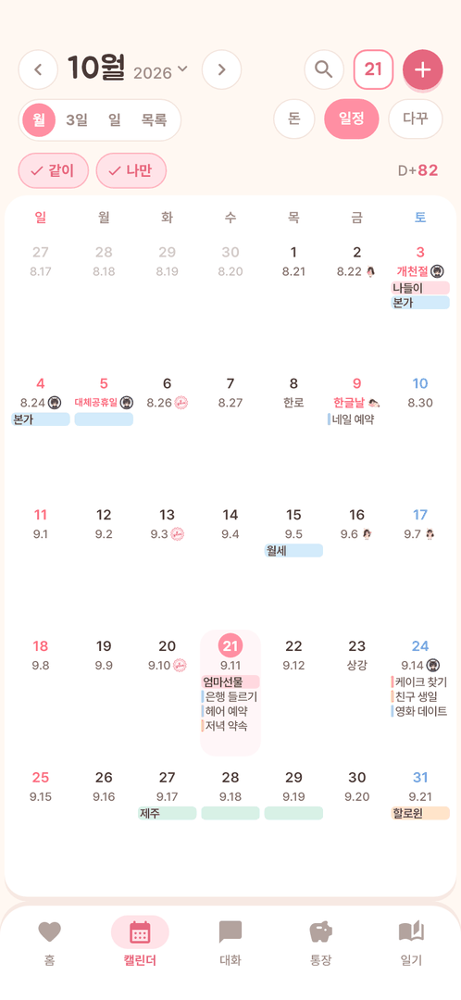
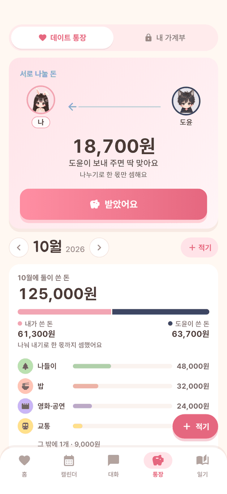
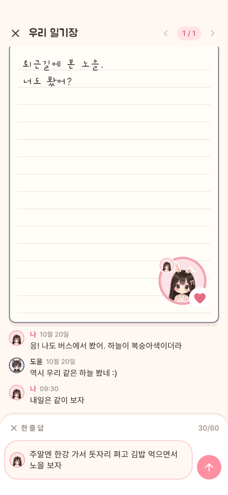
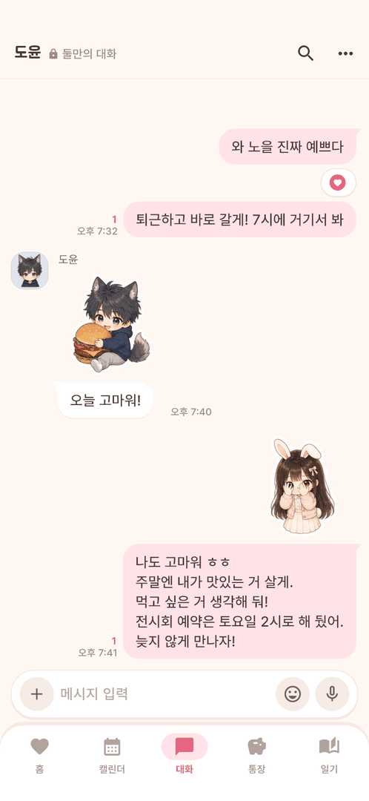

같이 쓰는 캘린더
- 일정마다 같이 보기·나만 보기를 골라요
- [같이] [나만] 칩으로 보고 싶은 것만 켜요
- 상대가 넣은 일정엔 작은 얼굴이 붙어요
- 날짜마다 음력과 공휴일도 함께 보여요
둘이 함께 쓰는 달력, 주고받는 일기, 데이트 통장. 연인의 하루를 한 앱에 같이 적어요. 같이 보기 기록은 두 사람만 열 수 있게 잠가 둬요.
곧 만나요 — 출시 준비 중이에요안드로이드부터 먼저 나올 예정이에요
화면 둘러보기
화면은 출시 전 모습이라 조금씩 바뀔 수 있어요. 지민·도윤은 예시 이름이에요.
옆으로 밀어서 더 보세요





같이 보기 기록은 두 사람이 가진 열쇠 조각을 합쳐야 열려요. 서버에는 잠긴 채로만 올라가서, 서버도 내용을 볼 수 없어요.
나 혼자 쓰는 달력·가계부·꾸미는 일기가 필요하다면 '정'도 있어요. 정은 인터넷 없이 내 폰 안에만 기록해요.
연과 정은 따로따로 쓰는 앱이에요. 정 둘러보기 →